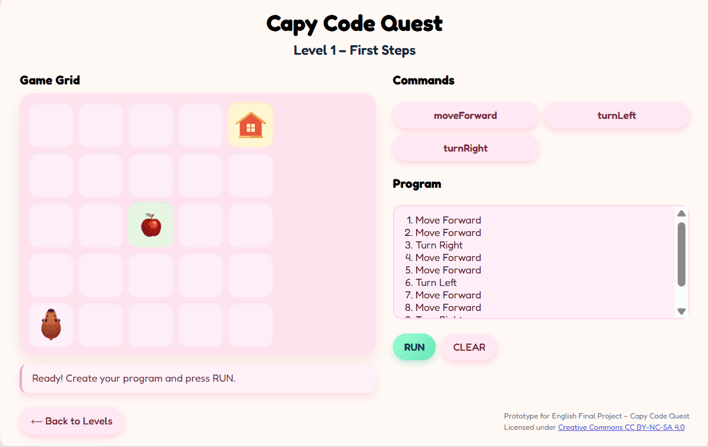
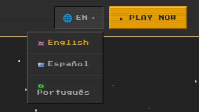
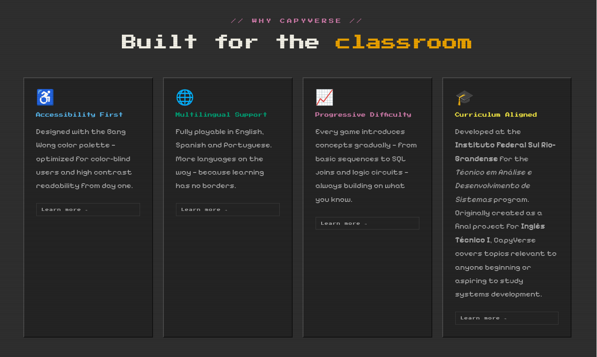

Everything that shaped CapyVerse Academy — its story, its principles, and the research behind it.
⬛about.txt
About — how it started, where it's going
CapyVerse Academy did not exist as a project until a year after its seed idea: in 2025, the only thing that existed was Capy Code Quest, a small block-based game that taught the basics of "programming" through simple visual graphics. The goal was already what it is today — to teach a subject through gamified learning to young learners who have had little to no contact with it.
A year later, in 2026, the same idea was tried out for other subjects in the field, and CapyVerse Academy was born: a single place gathering all the games that followed — Capy Cyber Defense, which teaches the basics of cybersecurity dynamically; Capy Logic Labs, which teaches logic gates through active learning where knowledge is applied as soon as it is acquired; and Capy Data Dungeon, which forces you to learn and use SQL to defend Capy inside a dungeon. A fifth game, Capy Net World — about networks, the internet, and how computers talk to each other — has been planned but its development is indefinitely on hold.
The conceptual and technical sides of the project evolved almost in parallel: a constant trial-and-error loop, switching back and forth between code, documentation, and the notes recorded along the way about improvements, observations, and ideas.
The plan is to make CapyVerse Academy seriously available to the public; it can already be reached through GitHub and the live site.
The main goal is to see this tool actually used in classrooms — not just to serve the purpose it was built for, but also to gather feedback directly from the audience it is meant to serve, so that feedback can drive future development.

Gameplay from the original Capy Code Quest — the 2025 prototype that started it all.
⬛accessibility.txt
Accessibility — lived experience, research, and an academic paper
The focus on accessibility is a deliberate choice for this project, specifically because of its academic and open-source nature. Based on an academic paper written by the same devs (before CapyVerse Academy existed as the project it is today), it aims for maximum accessibility of its content, with materials thought of as tools for teaching, learning, and studying — for students, teachers, and anyone else who wants to take part in the experience. Information and access to it are seen here as a need and a right, and providing them in an understandable and accessible way to every audience is treated as an obligation. That is how CapyVerse Academy aims to be one more contribution to the broader movement of virtual academic spaces that take this seriously.
Accessibility shows up in several layers. The interface itself is one: a web space with no files to download or install, and no account required to use it. Then there's the constant use of semantic HTML tags, the adoption of the Bang Wong color palette for those with color-vision deficiencies (color and contrast being basic tools for the correct reception of visual information), screen-reader compatibility, support for system preferences like reduced motion, and WCAG 2.1 adopted as a central guideline for the project's development — and the list only keeps growing.
Cover page of the ENCIF paper that grounds CapyVerse Academy's accessibility approach.
⬛languages.txt
Languages — built trilingual, now reaching for more
In its earliest stage, the project was created inside a binational institution for a course whose main focus was learning English with a technical orientation. That is why Spanish, Portuguese, and English were chosen as the project's initial implementation languages — to maximize accessibility for the audience it was first built for.
Given the accessibility-first nature of CapyVerse Academy (as discussed in the Accessibility section), the goal is to translate the site into as many languages as possible over time.

The language switcher in the header — every page, every game.
⬛pedagogy.txt
Pedagogy — CLIL and what games teach us about learning
Two bibliographical references had the strongest influence on the pedagogical side of CapyVerse Academy:
Content and Language Integrated Learning (CLIL)
Coyle, D., Hood, P., & Marsh, D. (2010). CLIL: Content and Language Integrated Learning. Cambridge University Press.
What Video Games Have to Teach Us About Learning and Literacy
Gee, J. P. (2003). What video games have to teach us about learning and literacy. Palgrave Macmillan.
Teaching content and language
Teaching subject content through an additional language. "Language," here, is not limited to programming or logic languages — the mechanics of a game can also be a language. Adopting this learning model encourages the proactive identification of solutions, which in turn places real emphasis on language learning.
According to Gee, talking about gaming-based learning, a game must be learned and then mastered in order to be played. What has to be learned is its mechanics — and those mechanics are based on the subject matter in question.
CapyVerse's games are designed around these ideas, following a loop that looks something like this: a situation is presented, the available tools are shown, a brief tutorial or explanation is given, and then the level begins. The sequence repeats across all levels, with difficulty rising progressively.
With a context or story in place, a sense of "duty" emerges in the student's mind — a mindset of "I have to fix this," and as a consequence, "how can I fix this?" This model gives students some freedom to come up with their own solutions, or to try different ones. Combined with classroom use, students quickly discover that the same problem has several solutions, and that some are more efficient than others. This experience can lead to teamwork between students as they get involved enough to find a solution together, for everyone.

The four pillars on the home page — accessibility, multilingual support, progressive difficulty, and curriculum alignment.
⬛curriculum.txt
Curriculum — TADS and Technical English
The project began as the final assignment for the course "Technical English," part of the second-semester curriculum of the Tecnologia em Análise e Desenvolvimento de Sistemas degree at the Instituto Federal Sul-Rio-Grandense. That is why the subjects taught through CapyVerse Academy's games carry this technological and computer-science focus.
About the TADS programInstituto Federal Sul-Rio-Grandense — Rio Grande campus, where TADS is taught.